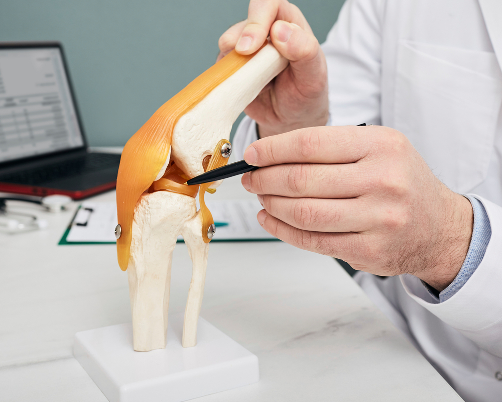

자가골수세포 주입술이란?
골반뼈에서 채취한 골수를 원심분리하여 골수 흡인 농축물(BMAC)을 무릎 관절에 주입합니다.
무릎 관절염의 통증과 기능 개선을 위한 치료로, 연골 재생이나 완치를 보장하는 치료는 아닙니다.
본인의 골수에서 분리·농축한 성분을 무릎 관절 안에 주입하여
통증 완화와 관절 기능 개선을 도모하는 치료입니다.

골반뼈에서 채취한 골수를 원심분리하여 골수 흡인 농축물(BMAC)을 무릎 관절에 주입합니다.
무릎 관절염의 통증과 기능 개선을 위한 치료로, 연골 재생이나 완치를 보장하는 치료는 아닙니다.

관절염의 진행 정도와 보행 시 불편을 살펴봅니다.
영상검사와 진찰로 치료 적용성을 판단하고 골수 채취부터 주입 후 관리까지 계획합니다.
본인의 골반뼈에서 골수를 채취하며, 채취 부위와 전신 상태를 확인합니다.
채취한 골수를 원심분리하여 관절 안에 주입할 골수 흡인 농축물을 준비합니다.
무릎 관절 안에 농축물을 주입하고 통증과 보행 기능의 변화를 확인합니다.
관절염의 단계와 기존 치료 반응을 함께 평가합니다.
검사 결과에 따라 적용 여부와 관리 계획을 정합니다.
골수 채취 부위·무릎 상태를 살피고 보행·운동은 의료진 안내에 따르세요.
발열·통증 및 붓기 악화·채취 부위 출혈 지속 시 진료받으세요.